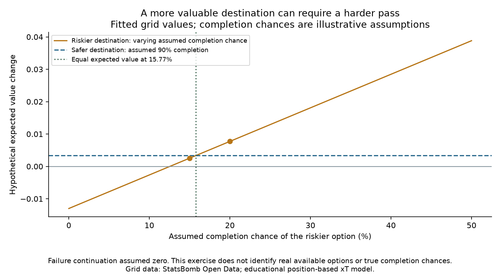

Football analyst training · Phase 3 · Lesson 46
Compare the chance of success and the reward.
A destination can be valuable but difficult to reach. Before assessing a choice, consider both.
A simple illustration
Start value: 0.03. Assume failed passes leave zero continuation value.
Safe: 90% chance of reaching a 0.04 zone Expected change = 0.90 × 0.04 − 0.03 = +0.006 Risky: 40% chance of reaching a 0.08 zone Expected change = 0.40 × 0.08 − 0.03 = +0.002
Completed assignment using our fitted grid
We chose hypothetical destinations using actual saved grid values. With assumed completion chances of 90% for the safer option and 15% for the riskier one, the safer option has higher expected value. Raise the riskier option's assumed chance to 20%, and it becomes higher.

These probabilities are assumptions, not learned estimates. We did not observe these as real simultaneous passing choices.
The analyst takeaway
A sensible decision can fail; a poor decision can succeed. To judge an actual choice beforehand, you need credible outcome probabilities and feasible alternatives. One outcome alone does not provide those.
Run 46_pass_decision_expected_value.py in Spyder. expected_change() weights each outcome by its probability. The worked assignment is complete with assistance; ask for a slower explanation of the formula if needed.